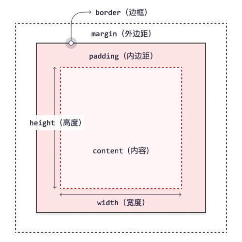

CSS 入门#2
CSS 盒子模型

不同部分的说明：
- Margin（外边距） - 清除边框外的区域，外边距是透明的。
- Border（边框） - 围绕在内边距和内容外的边框。
- Padding（内边距） - 清除内容周围的区域。
- Content（内容） - 盒子的内容，显示文本和图像。
元素的高度和宽度
height 和 width 属性用于设置元素的高度和宽度。
当指定一个 CSS 元素的宽度和高度属性时，只是设置了它的内容区域的宽度和高度。
Box Sizing
box-sizing 属性允许我们在元素的总宽度和高度中包括内边距（填充）和边框。
两个有相同指定宽度和高度的 <div> 元素：
1 | .div1 { |
如果在元素上设置了 box-sizing: border-box;，则宽度和高度会包括内边距和边框：
1 | .div1 { |
外边距
margin 属性用于在边框之外为元素周围创建空间。
也可为元素的每一侧指定外边距的属性：
margin-topmargin-rightmargin-bottommargin-left
边框
内边距
padding 属性用于在边框内的元素内容周围生成空间。
也可为元素的每一侧指定内边距的属性：
padding-toppadding-rightpadding-bottompadding-left
CSS 显示与可见性
display 属性设置一个元素应如何显示。
visibility 属性指定一个元素应可见还是隐藏。
通过设置为 hidden 可以隐藏元素。不同于 display:none，被隐藏的元素仍占据布局中的空间。
CSS 定位
position 属性规定应用于元素的定位方法的类型（static、relative、fixed、absolute 或 sticky）。
HTML 元素默认情况下的定位方式为 static（静态）。
静态定位的元素不受 top、bottom、left 和 right 属性的影响。
position: relative; 的元素相对于其正常位置进行定位。
设置相对定位的元素的 top、right、bottom 和 left 属性将导致其偏离其正常位置。
position: fixed; 的元素是相对浏览器窗口固定的，这意味着即使滚动页面，它也始终位于同一位置。top、right、bottom 和 left 属性可用于定位此元素。
固定定位的元素不会在页面中通常应放置的位置上留出空隙。
position: absolute; 的元素相对于最近的已定位父元素进行定位。
position: sticky; 的元素根据用户的滚动位置进行定位。
粘性元素根据滚动位置在相对（relative）和固定（fixed）之间切换。
CSS 溢出
overflow 属性指定在元素的内容太大而无法放入指定区域时是剪裁内容还是添加滚动条。
默认。溢出没有被剪裁。内容在元素框外渲染。
1 | div { |
溢出被剪裁，其余内容将不可见。
1 | div { |
溢出被剪裁，同时添加滚动条以查看其余内容。
1 | div { |
👆水平方向的滚动条
与 scroll 类似，但仅在必要时添加滚动条。
1 | div { |
overflow-x 和 overflow-y 属性分别定义水平和垂直方向的溢出。
 wechat
wechat alipay
alipay